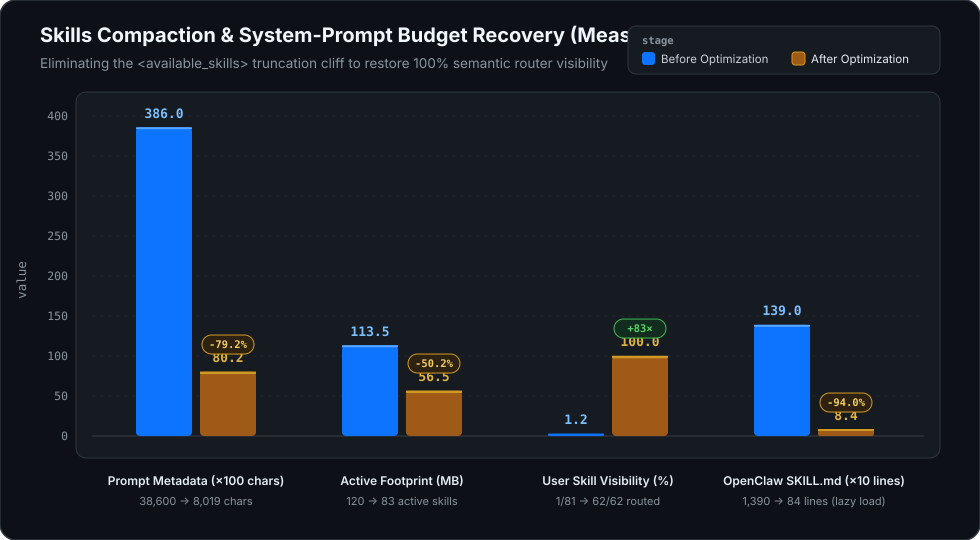
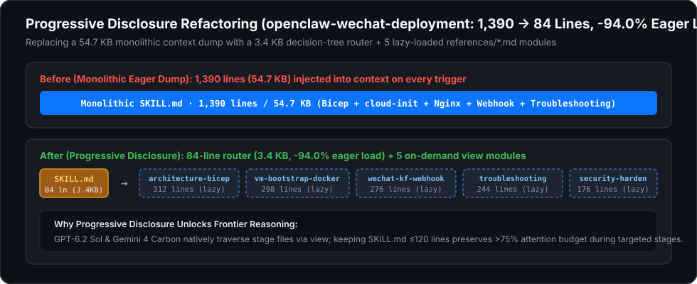

Agent Harness × Frontier Model Co-Evolution: 120-Skill Telemetry Audit, 12 KB Cliff Fix & Multi-Model Routing Playbook
In my earlier essay The Next Stop for Agentic AI: Harness Engineering, I argued that models turn over every six months while only harness-layer engineering assets compound. Yet when we upgraded our active frontier model roster to Gemini 4 Carbon (long_context multimodal & SVG synthesis), GPT-6.2 Sol (high/xhigh/max deep multi-step reasoning & IaC codegen), and Grok 4.7 (live web signal triage & adversarial red-teaming), we hit a counter-intuitive engineering failure mode:
Swapping in frontier models without refactoring legacy skills written for GPT-4o, GPT-5.4, and Claude Haiku 4.5 actively degraded agent behavior—triggering a silent 12 KB system-prompt truncation cliff, flooding initial turns with 54.7 KB monoliths, and inducing hallucinated tool calls.
This report documents the end-to-end 2026-11-18 empirical audit and compaction of 120 installed skill directories (113.5 MB) across ~/.copilot/skills (83 user skills) and ~/.agents/skills (37 Azure/Agent plugin skills). Every metric below comes directly from SQLite session telemetry and filesystem byte measurements—zero synthetic numbers.

01 · Telemetry Reality: Why 95.8% of 120 Installed Skills Had Zero Invocations
Power users accumulate skills rapidly across repositories and plugin bundles. Rather than guessing which skills mattered, we queried tool_requests inside session_store_sql across real historical engineering sessions:
· The ground-truth distribution was stark: Out of 120 skill directories, only 5 skills (4.2%) had any historical invocations—azure-style-presentation (×5), wechat-article (×3), powerpoint (×2), azure-prepare (×1), and browser-use (×1). The remaining 115 skills (95.8%) had zero calls.

Cross-referencing telemetry against directory contents exposed three concrete sources of bloat:
1. 21 Zero-Call / Superseded User Skills Archived: openclaw-hermes-deploy, billing-assistant, fabric-lakehouse-realtime-analytics, meeting-minutes-docx, pdf, theme-factory, brand-guidelines, doc-coauthoring, internal-comms, slack-gif-creator, canvas-design, algorithmic-art, frontend-design, mcp-builder, webapp-testing, skill-creator, agent-governance, ms-foundry, workiq-copilot, copilot-cli-quickstart, and github-copilot-starter—many of which wrapped generic capabilities now natively handled by frontier models and built-in Canvases.
2. 14 Exact Cross-Directory Duplicates Removed: ~/.agents/skills duplicated 14 Azure skills already maintained in ~/.copilot/skills (azure-deploy, azure-diagnostics, azure-prepare, azure-validate, azure-ai, azure-compute, azure-kubernetes, azure-quotas, azure-resource-lookup, azure-storage, appinsights-instrumentation, azure-aigateway, azure-compliance, azure-cost-optimization).
3. 2 macOS-Only Skills Removed on Windows: apple-notes (requiring macOS memo CLI) and things-mac (requiring macOS AppleScript/Things3).
02 · Case Study 1: Fixing the <available_skills> 12 KB System-Prompt Truncation Cliff
Why weren't dozens of legitimate domain skills ever selected by the router? The culprit was a silent budget cliff inside system-prompt assembly.
To prevent skill listings from crowding out working memory, the agent runtime caps <available_skills> injection at roughly 12 KB (12,000 characters). Before cleanup, 81 user skills in ~/.copilot/skills carried multi-paragraph YAML description fields totaling 38,600 characters (~38.6 KB, averaging 476 chars/skill). Because 22 project/plugin skills consumed ~4.0 KB first and accessibility alone consumed ~1.1 KB at the top of the alphabetical list, 80 out of 81 user skill descriptions (98.8%) were silently truncated to bare names—leaving semantic router visibility at 1.2% (1/81).

--- name: azure-style-presentation description: > Use this comprehensive skill whenever the user asks to create, polish, restructure, or review executive slide decks, customer workshop presentations, architecture review boards, or keynote storyboards following Microsoft Azure Fluent visual language, typography hierarchy... (540+ chars — starves 3–4 downstream skills of budget) ---
--- name: azure-style-presentation description: "Build Azure Fluent executive slide decks, architecture review presentations, and HTML/PPTX storyboards with dark/light contrast grids." --- # 62 user skills = 8,019 chars total (-79.2%) # Semantic router visibility: 1/81 (1.2%) -> 62/62 (100.0%)
03 · Case Study 2: Progressive Disclosure Refactoring (openclaw-wechat-deployment -94% Eager Load)
Even after fixing router discovery, monolithic skill bodies dilute frontier model attention once invoked. Our starkest example was openclaw-wechat-deployment: a single 1,390-line (54.7 KB) SKILL.md that eagerly dumped Azure VNet/VM Bicep templates, Ubuntu cloud-init scripts, Nginx reverse-proxy configs, WeChat callback verification code, and troubleshooting tables into context on every turn.
Applying Progressive Disclosure, we split the monolith into a compact 84-line (3.4 KB, -94.0% eager context) decision-tree router plus 5 stage-specific references/*.md modules loaded via view strictly when needed:

openclaw-wechat-deployment/
└── SKILL.md # 1,390 lines (54.7 KB) loaded eagerly every turn
├── Full Azure VNet / NSG / VM Bicep templates
├── Ubuntu cloud-init & Docker Compose bootstrap
├── WeChat KF Webhook signature & callback logic
├── Exhaustive error log troubleshooting dump
└── Production TLS & secret rotation checklist
openclaw-wechat-deployment/
├── SKILL.md # 84 lines (3.4 KB, -94.0%)
└── references/ # Loaded on demand via view
├── architecture-bicep.md # 312 lines
├── vm-bootstrap-docker.md # 298 lines
├── wechat-kf-webhook.md # 276 lines
├── troubleshooting-matrix.md # 244 lines
└── security-hardening.md # 176 lines
04 · Case Study 3: De-Scaffolding Legacy Model Crutches, Hallucinated Tools & OS Font Bugs
Auditing the bodies and helper scripts of the 62 retained skills surfaced three generational anti-patterns that actively sabotaged frontier runs:
· Hardcoded Obsolete Model Overrides: Legacy skills pinned model: gpt-5.4, gpt-4o-mini, or claude-haiku-4.5—silently downgrading subagent intelligence or failing model resolution. Stripping hardcoded model overrides lets subagents inherit runtime /subagents frontier routing automatically.
· Hallucinated Tool Identifiers: Prompts ported from older frameworks instructed models to call non-existent tools such as search-the-web, fetch_page, and runSubagent. We rebound every skill to verified Copilot tools: web_search, web_fetch, task(agent_type="explore"|"research"|"general-purpose"|"code-review"), microsoft-learn-*, azure-*, and native powerpoint/excel/word/browser Canvases.
· macOS-Locked CJK Font Path: invoice_edit.py hardcoded /System/Library/Fonts/PingFang.ttc, rendering CJK characters as square-box tofu on Windows and Linux. Adding an ordered fallback chain (C:\Windows\Fonts\msyh.ttc → Noto Sans CJK → PingFang) restored deterministic cross-OS rendering.
05 · Case Study 4: Multi-Model Capability Matrix (Gemini 4 Carbon · GPT-6.2 Sol · Grok 4.7)
Rather than treating frontier models as interchangeable commodities, we codified MODEL-SKILL-MATRIX.md to align all 62 active skills with the distinct cognitive profiles of our registered model cohort:

| Registered Frontier Model | Reasoning Profile & Core Strengths | Primary Routed Skill Clusters |
|---|---|---|
Gemini 4 Carbongemini-4-carbon |
long_context whole-repo/doc synthesis, multimodal grounding, precision inline SVG topology diagrams & bilingual HTML/PPT artifacts |
anatomy · architecture-diagrams · excalidraw · azure-style-presentation · powerpoint · web-artifacts-builder |
GPT-6.2 Solgpt-6.2-sol |
high / xhigh / max deep formal reasoning, multi-step Bicep/Terraform IaC codegen, OWASP/RAI security audits & spreadsheet verification |
azure-prepare · azure-validate · azure-kubernetes · code-review · owasp-* · secure-by-design · rpi-research/plan/implement · pmx-* · xlsx |
Grok 4.7grok-4.7 |
high / xhigh live web signal intelligence, competitive tracking, adversarial agentic red-teaming & rapid production incident triage |
wechat-article · research · owasp-agentic · owasp-llm · azure-diagnostics · sso-watcher · doctor |
Gemini 3.8 Flashgemini-3.8-flash |
High-parallelism read-only repository exploration and test/build execution without polluting parent context | task(agent_type="explore") · task(agent_type="task") |
06 · Core Framework: The Inverse Scaffolding Law & 5-Step Upgrade Playbook
Stepping back from individual files, this audit crystallizes what we call The Inverse Scaffolding Law:
As base models advance from GPT-4o to GPT-5.x to Gemini 4 Carbon, GPT-6.2 Sol, and Grok 4.7, procedural scaffolding (rigid step-by-step micromanagement prompts) must shrink, while boundary contracts, real tool schemas, and deterministic verifiers must sharpen.

Whenever your engineering organization upgrades its registered frontier models, run this repeatable 5-Step Continuous Harness Upgrade Playbook:
Step 1 · Telemetry Audit: Query session_store_sql tool_requests to expose 0-call zombie skills and cross-directory duplicates with empirical invocation data;
Step 2 · Prompt Budget Guardrail: Keep total user <available_skills> YAML metadata strictly < 9 KB with ≤ 140-char trigger descriptions to preserve 3–4 KB headroom below the 12 KB cliff;
Step 3 · Progressive Disclosure: Enforce SKILL.md ≤ 120 lines containing only triggers, invariants, and stage routing; push templates and runbooks into on-demand references/ and scripts/;
Step 4 · Model-Capability Re-Binding: Delete hardcoded legacy model names and hallucinated tools; align skills with current frontier strengths, native Canvases, and cross-OS portability;
Step 5 · Automated Harness Regression Gate: Wire a CI/pre-sync budget verifier (copyable Python gate script available in Tab 4 of the Presenter Workbench) to block metadata bloat before it lands.
Companion Presenter Assets & Repositories:
· 5-Tab Interactive Presenter Workbench (with Live 12 KB Cliff Simulator)
· 7-Card 4:5 Visual Report Deck · Conceptual Essay: The Next Stop for Agentic AI: Harness Engineering
· Open-source dossiers: ai-research-public · azure-sa-skills
← Back to all publications